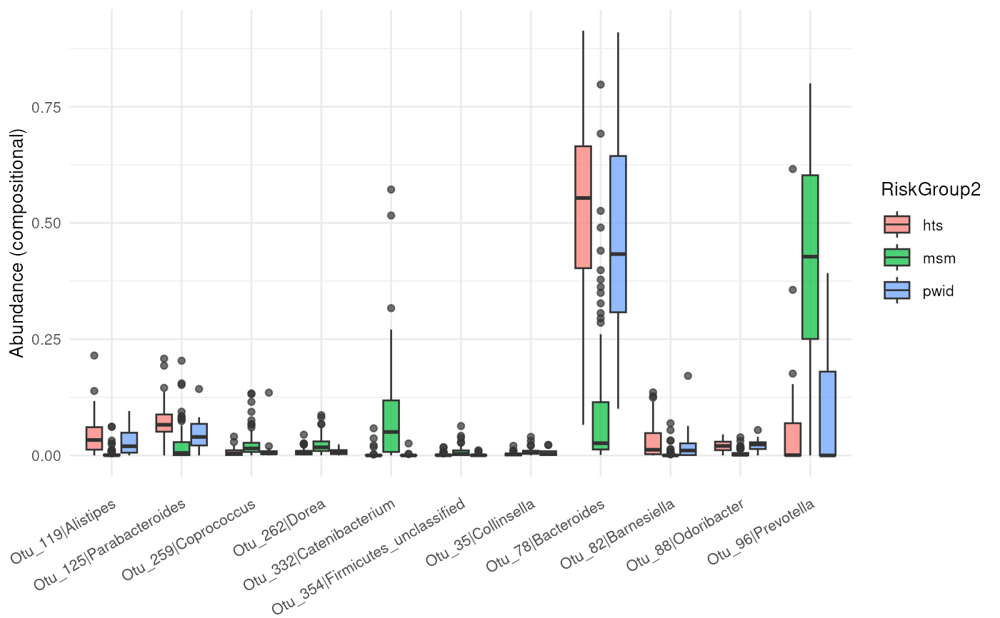
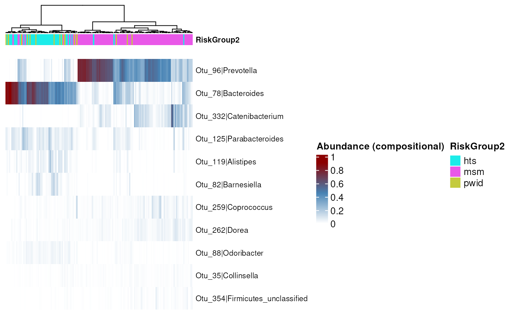
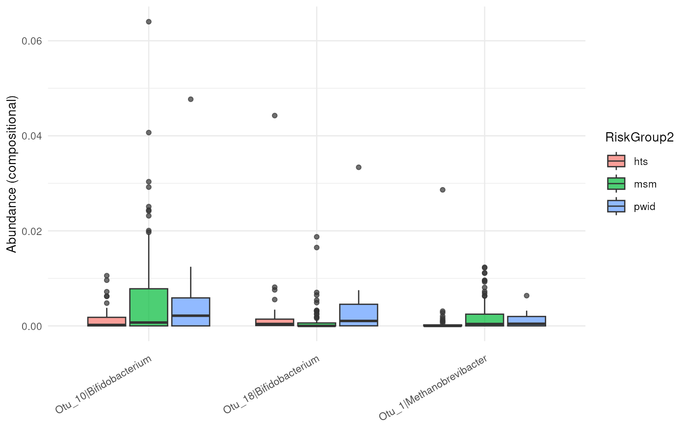

Abundance boxplot
Usage
abundance_plt(
rec,
taxa_ids = NULL,
type = "boxplot",
transform = "compositional",
scale = 1,
top_n = 20,
target = NULL,
contrast_id = NULL
)Arguments
- rec
A prepped
Recipeobject.- taxa_ids
Character vector with taxa_ids to plot. If taxa_ids is NULL the significant characteristics present in all of the executed methods will be plotted.
- type
Character vector indicating the type of the result. Options: c("boxplot", "heatmap").
- transform
Transformation to apply. The options include: 'compositional' (ie relative abundance), 'Z', 'log10', 'log10p', 'hellinger', 'identity', 'clr', 'alr', or any method from the vegan::decostand function. If the value is NULL, no normalization is applied and works with the raw counts.
- scale
Scaling constant for the abundance values when transform = "scale".
- top_n
Maximum number of taxa to represent. Default: 20.
- target
Modeled target used for annotations. Required when a modeled recipe contains more than one target.
- contrast_id
Modeled contrast used for automatic taxon selection. Required when
taxa_ids = NULLand more than one contrast is available.
Value
ggplot2 or HeatmapList, or invisible NULL with an informational
message when automatic selection finds no significant taxa.
Examples
data(test_prep_rec)
## Boxplots of taxa detected by all methods
abundance_plt(test_prep_rec)
#> You have inserted a phyloseq object. The phyloseq-based methods will be deprecated. We recommend switching to the (Tree)SummarizedExperiment framework and mia R/Bioconductor package.

## Display the same abundances as a heatmap
if (requireNamespace("ComplexHeatmap", quietly = TRUE) &&
requireNamespace("gplots", quietly = TRUE)) {
abundance_plt(test_prep_rec, type = "heatmap")
}

## Select taxa explicitly
taxa_ids <- head(tax_table(test_prep_rec)$taxa_id, 3)
abundance_plt(test_prep_rec, taxa_ids = taxa_ids)
